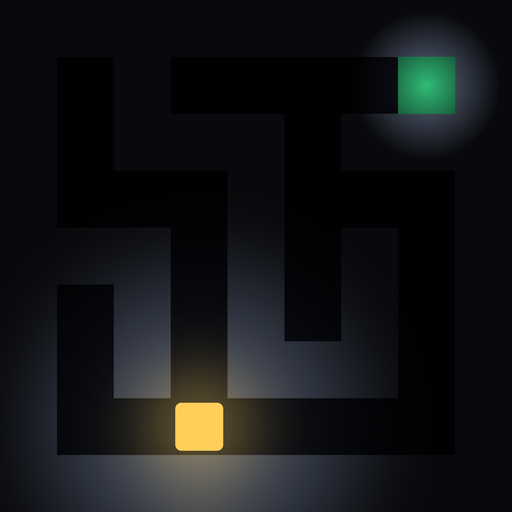

Lantern Maze
미로를 1초 보여 주고 불이 꺼집니다.
기억과 꺼져 가는 등불로 출구를 찾으세요.
1미로를 잠깐 기억
2어둠 속에서 이동
3등불이 꺼지기 전 탈출
안드로이드 앱 설치 방법
- 안드로이드 앱 받기를 누르고, 경고가 나오면 그래도 다운로드
- 다운로드한 파일을 열고 출처를 알 수 없는 앱 허용
- 설치 (Play 프로텍트 경고는 무시하고 설치)
- "설치되지 않음"이 나오면 예전 Lantern Maze를 지우고 다시 설치
아이폰에서 앱처럼 쓰기
- Safari에서 바로 플레이를 엽니다
- 아래쪽 공유 버튼 → 홈 화면에 추가
- 홈 화면 아이콘으로 열면 주소창 없이 전체 화면으로 실행